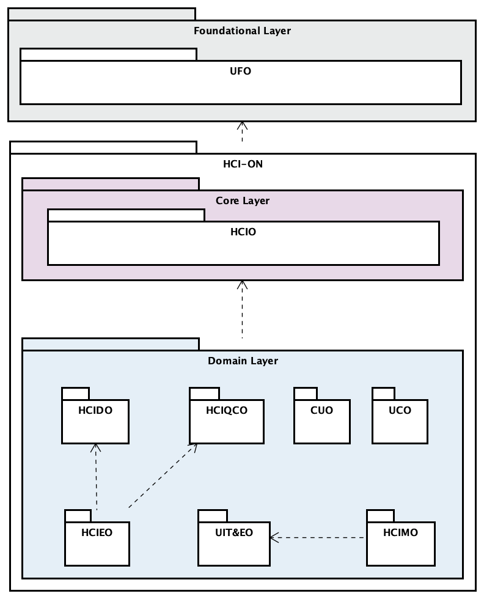

SEON: The Software Engineering Ontology Network
SEON provides a well-grounded network of SE reference ontologies, and mechanisms for deriving and incorporating new integrated domain ontologies into the network.
SEON results from various efforts on building ontologies for the Software Engineering (SE) field. Although SEON itself is a new proposal, the studies and ontologies developed along the years are important contributions for defining this network. Hence, SEON rises with three main premises:
- being based on a well-founded grounding for ontology development;
- offering mechanisms to support building and integrating new SE domain ontologies to the network; and
- promoting integration by keeping a consistent semantics for concepts and relations along the whole network.
Currently, the SEON Network is composed of the networked ontologies shown in Figure 1.

Figure 1. SEON Network view. (Network Graph view)
Currently, the SEON Network is composed of the networked ontologies shown in Figure 1.

Figure 1. SEON Network view. (Network Graph view)
SEON's Architecture
SEON architecture is organized considering three ontology generality levels as Figure 2 shows.

Figure 2. SEON Architecture.
Foundational layer
At the bottom of SEON, there is the Unified Foundational Ontology (UFO), which is developed based on a number of theories from Formal Ontology, Philosophical Logics, Philosophy of Language, Linguistics and Cognitive Psychology. UFO [1] is divided in three parts: an ontology of endurants (objects), an ontology of perdurants (events), and an ontology of social entities. UFO's ontological distinctions are used for classifying SEON concepts, e.g., as objects, actions, commitments, agents, roles, goals and so on. UFO provides the necessary grounding for the concepts and relations of all networked ontologies.
Core layer
In the center of SEON, providing the SE core knowledge for the network, there is the Software Process Ontology (SPO). SPO is a core ontology grounded in UFO, aiming at establishing a common conceptualization on software processes. SPO scope embraces the following aspects of the software process domain: standard, project and performed processes and their activities, artifacts handled, resources used and procedures adopted, and stakeholders participation. SPO reuses some concepts from the Enterprise Ontology (EO), a core ontology on enterprises (external to SEON), for dealing with aspects related to organizations, such as team membership. Another external ontology related to this layer is the Core Ontology on Measurements (COM)
Domain-specific layer
Over the foundational and core layers, domain ontologies appear. Each domain networked ontology is grounded in core ontologies and in UFO, and encompasses a SE subdomain (e.g., software requirements, design, configuration management, and measurement). Although not explicit in Figure 2, more specific domain ontologies can be developed based on other more general domain ontologies. For instance, ontologies addressing runtime requirements (RRO), goal-oriented requirements (GORO) and the requirements development process (RDPO) were developed based on the Reference Software Requirements Ontology (RSRO). For matter of organization, domain networked ontologies can be grouped in subnetworks, as the Requirements engineering Ontology subNetwork (ReqON).
In a nutshell, the foundational ontology offers the ontological distinctions for the core and domain layers, while the core layer offers the SE core knowledge for building the domain networked ontologies. This way of grounding the ontologies in the network is helpful for engineering the networked ontologies, since it provides ontological consistency and makes a number of modeling decisions easier.
SEON's Search Mechanism
As SEON grows, the number of network ontologies and their concepts increases. In order to facilitate exploring the network and identifying the concepts for integration or reusing, the SEON Specification provides a simple search mechanism. This feature is able to locate the desired concepts by maching the search string with the concepts' names and definitions.